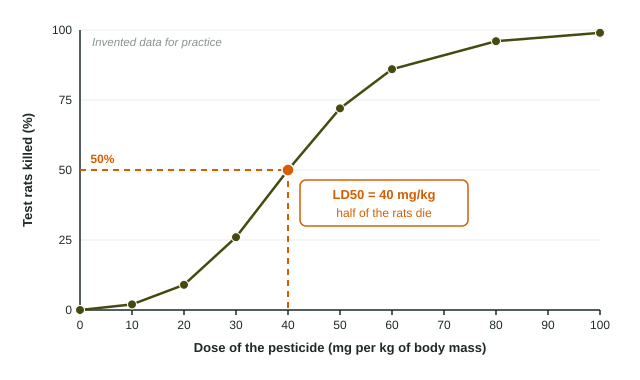

Every pesticide, cleaning product and medicine can harm you at a large enough dose. To compare how dangerous different substances are, toxicologists need one number that means the same thing for every chemical. The most common one is the LD50. This page explains what it measures, how to read it off a graph, how to turn it into a dose for a whole animal, and what it cannot tell you.
Dose and toxicity
The dose is how much of a substance enters an organism. A dose of 10 milligrams means very little to a horse and a lot to a mouse, so doses are almost always given per kilogram of body mass, in mg/kg. A dose of 10 mg/kg means 10 milligrams for every kilogram the animal weighs. That way a mouse, a rat and a dog can be compared on one scale.
Toxicity is how harmful a substance is. A substance that harms living things is called a toxicant. Toxicity depends on the dose, the route (swallowed, breathed in or through the skin), how long the exposure lasts and who is exposed. Young, old and sick individuals are often more sensitive.
What LD50 means
LD50 stands for "lethal dose 50%". It is the dose that kills half of a test population. Researchers give groups of test animals, often rats or mice, a range of doses. At each dose they count what percent of the group dies. They plot percent killed against dose, find 50% on the vertical axis, go across to the line and read down to the dose axis.

In the figure, 26% of the rats die at 30 mg/kg and 72% at 50 mg/kg. The line crosses 50% at 40 mg/kg, so the LD50 is 40 mg/kg.
Why use a group and a percent? Individual animals differ. One rat might survive a dose that kills its neighbor. The percent of a whole group smooths out those differences, and the 50% point is where the curve is steepest, so it can be read most precisely.
Lower LD50 means more toxic
This is the point students most often get backward. The LD50 is the dose needed to kill half the animals. If a tiny dose does it, the substance is very toxic. If it takes a huge dose, the substance is only mildly toxic.
| Oral LD50 in rats | Toxicity | US pesticide label signal word |
|---|---|---|
| 50 mg/kg or less | Highly toxic | DANGER |
| above 50 to 500 mg/kg | Moderately toxic | WARNING |
| above 500 to 5,000 mg/kg | Slightly toxic | CAUTION |
| above 5,000 mg/kg | Low toxicity | CAUTION or none |
The EPA uses these groups (toxicity categories I to IV, set in federal rules, 40 CFR 156.62 and 156.64) to choose the warning word on a pesticide label. Category IV products need no signal word; if they use one, it must be CAUTION. To compare two substances, divide the larger LD50 by the smaller. A chemical with an LD50 of 4 mg/kg is times as toxic as one with an LD50 of 4,000 mg/kg.
From LD50 to a whole-body dose
Because the LD50 is per kilogram, you multiply by the body mass to get the dose for one animal. Write the units so you can see the kilograms cancel, which is also what earns the setup point on the exam.
Worked example. A pesticide has an LD50 of 60 mg/kg in rats. What dose would be expected to kill half of a group of 0.40 kg rats? Give the answer in milligrams, then in grams.
Setup: . The kilograms cancel and leave milligrams.
Answer: for each rat.
In grams:
The common slip is dividing (60 ÷ 0.40 = 150), which gives the wrong unit (mg/kg²) and a dose that would grow as the animal gets smaller.
The same steps work for any animal. A 12 kg dog and a chemical with an LD50 of 25 mg/kg: .
What LD50 does not tell you
- It is measured in animals. People may be more or less sensitive than rats, so an LD50 from rats is only an estimate for humans.
- It only counts deaths. A substance can cause cancer, birth defects or nerve damage at doses far below the LD50. The next topic looks at the whole curve and at effects other than death.
- It is a single, short exposure. Small doses taken every day for years can do harm that a one-time test never shows.
- It depends on the route. The oral LD50 (swallowed) and the dermal LD50 (on the skin) of one chemical can be very different.
So a high LD50 does not mean "safe". It means a large single dose is needed to kill half of a group of test animals.
On the exam
Expect to read an LD50 off a graph, rank substances by toxicity, and calculate a whole-body dose with units. Show the setup with mg/kg and kg written in, then give the answer with its unit, and check whether the question wants milligrams or grams.